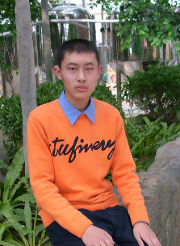

我来自山东省新泰市，现就读于清华大学经济管理学院会计系。2009年，我因在全国中学生数学、物理竞赛中获得两项省级赛区一等奖，被保送进入清华大学。三年来，我以“又红又专，全面发展”为目标，经过不懈努力，取得了一定成绩。
（1）思想积极进步，工作认真负责，获评清华大学优秀学生干部
我在高中就提交了入党申请书，并被确定为重点培养对象，但因年龄限制未能入党。进入大学后，我积极向党组织靠拢，以党员的标准要求自己。2009年10月，我参加了国庆60周年群众游行。我积极参加理论学习，在经管学院“星火杯”党建知识竞赛中获得三等奖，在经管学院院史知识竞赛中获得三等奖，写作文章《弘扬四种作风，加强党性修养》发表在清华大学红色网站上。我热心公益志愿，先后担任清华大学“情系母校”活动支队长、百年校庆志愿者、校园义务讲解志愿者等。我积极参加集体建设，连续四年担任班委。2010年11月，我被确定为重点培养对象，随后光荣地成为了中国共产党预备党员。
在学好专业知识的同时，我积极参加社会工作。从院团委调研组组长、院科协副主席、校学生会宣传部副部长，到院团委调研副书记、校团委《紫荆》报副主编，我每到一个岗位，都牢记守土有责，踏踏实实地完成本职工作，努力为同学服务。在社会工作中，我不仅得到了同学的认可，而且提高了自己了的组织协调能力，被评为清华大学优秀学生干部，入选经管学院优秀人才领导力培养计划。
（2）学习勤奋刻苦，科研追求卓越，入选“星火班”六期
我勤奋踏实，刻苦学习，三年学分绩排名专业第一。大一学年，为了适应清华紧张的学习节奏，我坚持每天七点到教室自习，直到十点半教室关门才回到宿舍，甚至熄灯后还到学院继续学习。大学三年来，我有12门课程排名第1，3门课程获得满分，43%的课程分数在95以上；6个学期中，5个学期排名专业第1，两次获得综合一等奖学金（目前共评两次）。
大三学年，我作为第一作者，完成了SRT项目《企业债券发行票面利率实证分析》，研究含权条款对企业债券票面利率的影响，获得清华大学“挑战杯”三等奖；我组织完成了作品《农民满意度及新型农村合作医疗报销政策分析》，深入分析了农民对合作医疗制度的满意度，对完善农村医疗体系提出了建议，获得清华大学“挑战杯”一等奖。今年6月，我申请了国家级SRT项目，研究信用评级对企业债券定价的影响。今年5月，我入选了清华大学“科技创新，星火燎原”学术创新人才培养计划。
（3）申请本院直博，我的事业在中国
选择清华就是选择了一生的责任。于我而言，“清华”二字，是入学时唱起的第一句校歌，是国庆游行走过天安门城楼前的那份骄傲，更是今天铭刻在心灵深处那不可磨灭的烙印，以及投身科研、学术报国的决心。每次走进舜德楼，“创造知识、培育领袖、贡献中国、影响世界”的学院使命深深激励着我。一次次深入田间地头的社会实践让我感受到肩头沉甸甸的责任，对党史、院史的学习让我看到了经管人“经世济民”的精神内涵，四年“永不卸任的班委”经历让我体会到服务集体的快乐。三年来，我找到，并坚守着自己的方向——成为陈岱孙、钱颖一、李稻葵那样的经济学家，研究解决中国的实际问题，贡献学术新知，为国家富强、民族复兴和人民幸福贡献力量。
经济学研究需要良好的数理基础，所以我尤其重视对数学、物理的学习。数学书上的每道习题，我至少做过两遍，因此每门课程成绩都在95分以上；作为经管学院学生，我主动选修了为工科院系开设的《大学物理B(1)》《大学物理B(2)》，分别获得96分和100分。另外，我还获得全国部分地区大学生物理竞赛（非物理类A组）一等奖。
离基层越近，离真理越近。三年内，我参加了四次社会实践，在与农民、村医、农民工和基层干部的接触中受教育、长才干。在实践中，我培养了本土情怀，感受着中国力量，对一些社会经济问题也有了更深入的思考。我逐渐认识到，任何一个理论、学说，只有与本国国情相结合，与时代发展同进步，与人民群众共命运，才能焕发出强大的生命力、创造力。
大三学年，我面临着工作、读研和出国的选择。立志学术研究的同学大多选择出国，以我的成绩和能力也可以申请到国外顶尖高校，但李稻葵老师饱含深情的话言犹在耳：很多人说中国人不会搞经济学，还找出各种原因。他们说得有一定道理，但是，如果我们墨守成规，甘心落后，现实就会永远延续下去，他们的这些论断就会成为永恒的历史。经过全面而深入的思考，我选择了在经管学院申请直博，将来为祖国的科研事业做出贡献。
三年来，在“自强不息，厚德载物”的激励下，在“入主流，上大舞台”的号召下，在老师们的指导和帮助下，在同学们的关心和支持下，我凭着追求卓越的精神、精益求精的态度、持之以恒的行动，在学习、科研、社会工作等方面取得了一定成绩。但成绩属于过去，今后我将更加努力地学习和工作，不断进步，为实现学术报国的梦想而奋斗！